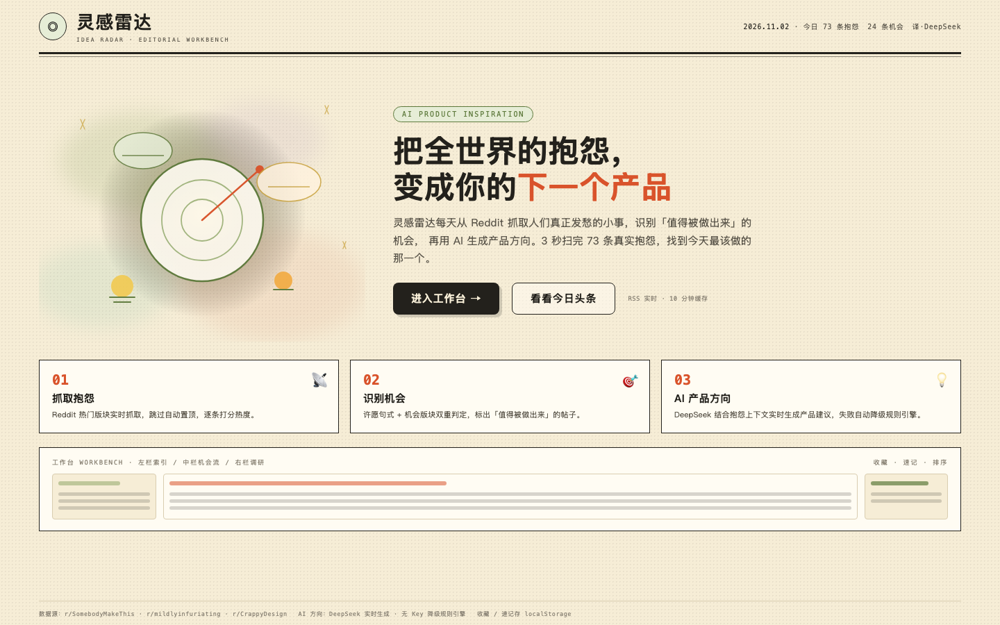
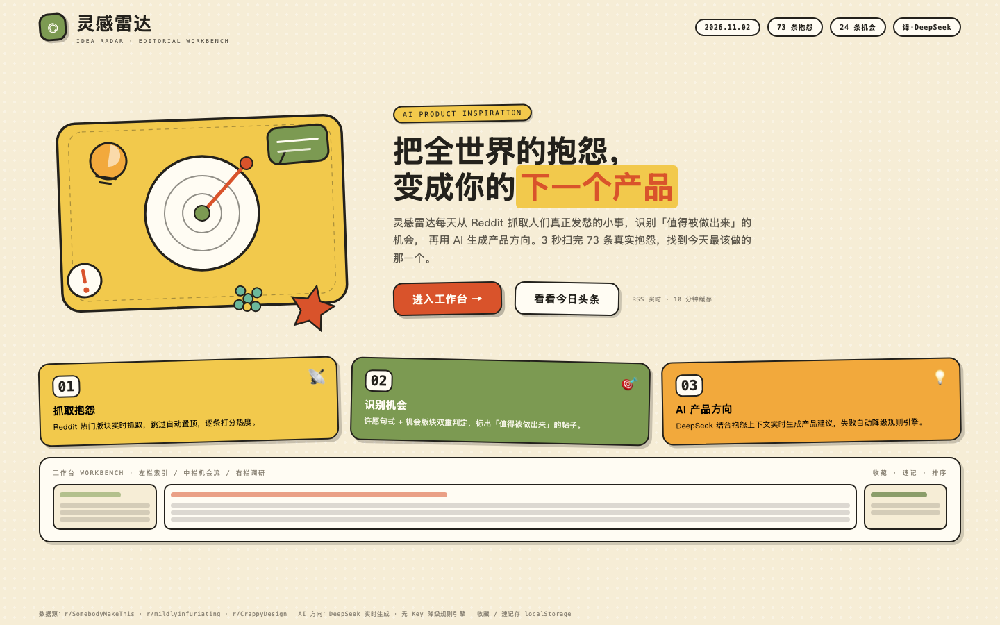
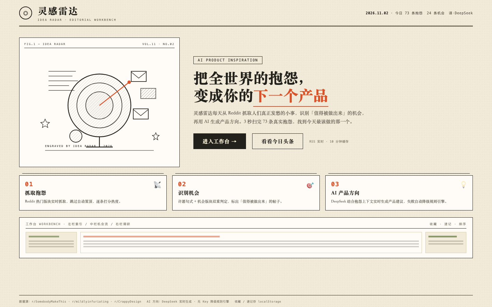

灵感雷达 · 首页插画三版对比
IDEA RADAR LANDING — 3 ILLUSTRATION DIRECTIONS
A · 水彩治愈
WATERCOLOR / 柔和晕染

- 低饱和奶油黄 + 抹茶绿，多色晕染光斑
- 柔和模糊边缘，晨光氛围，安静治愈
- 适合「深度阅读 / 调研工作台」气质
风格：温柔 · 呼吸感
B · 贴纸拼贴
STICKER / 高饱和圆角

- 奶油黄 / 柿橙 / 抹茶绿高饱和贴纸卡牌
- 粗描边 + 旋转错位 + 硬投影，多巴胺能量
- 情绪外放、抓眼，适合热闹的社媒风格
风格：活泼 · 多巴胺
C · 报刊蚀刻
ENGRAVING / 编辑部线描

- 黑白交叉排线，复古报刊图版感
- 「FIG.1 / VOL.11」栏目标注，杂志味最重
- 与现有编辑部工作台风格最一致
风格：克制 · 编辑感